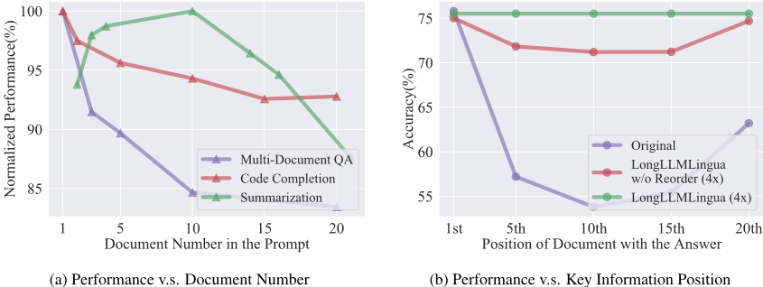
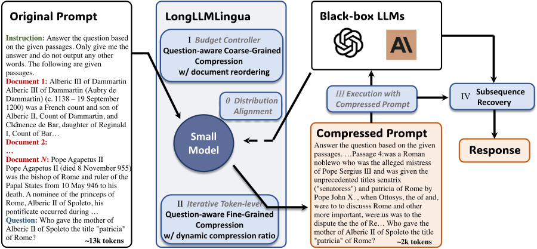
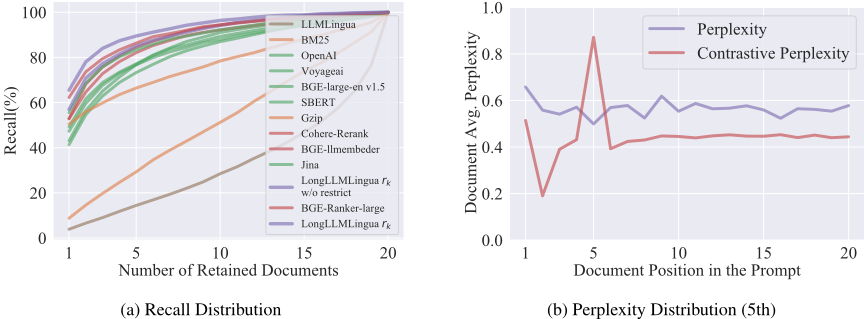
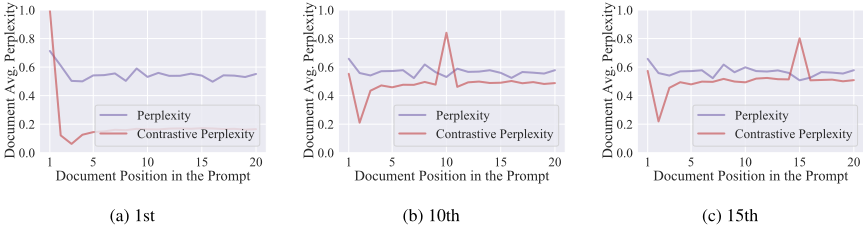
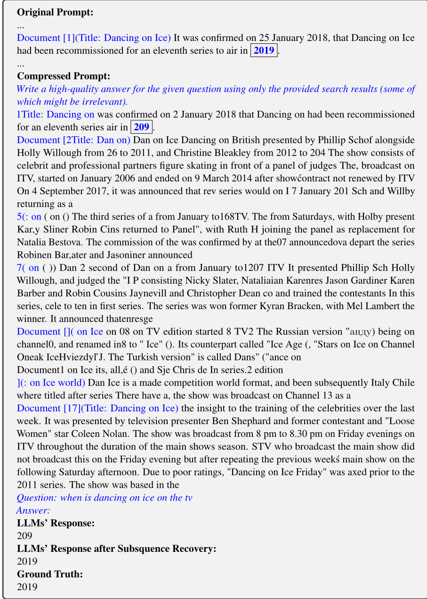

LongLLMLingua：通过提示压缩加速并增强长上下文场景中的 LLM
长上下文场景中 LLM 面临计算成本高、无关冗余信息导致性能下降、位置偏差（lost in the middle）三大挑战。LongLLMLingua 以 LLMLingua 为骨干提出问题感知的粗到细压缩：粗粒度用 p(问题|文档) 评估文档相关性并重排序以缓解位置偏差，细粒度用对比困惑度（等价于条件点互信息）保留与问题相关的 token，再配合动态压缩比与压缩后子序列恢复策略。在 NaturalQuestions、LongBench、ZeroSCROLLS、MuSiQue、LooGLE 五个基准上，压缩后的提示反而优于原始提示：NaturalQuestions 最高提升 21.4% 且输入 token 减少约 4 倍，LooGLE 成本降低 94.0%，10k token 提示端到端延迟加速 1.4x-2.6x。对团队而言，这是 RAG/长上下文应用中"问题感知压缩+重排"可直接复用的工程方案，同时改善质量与成本。
长上下文场景下 LLM 的三大挑战：(1) 更高的计算成本（费用与延迟）；(2) 更长提示引入无关冗余信息削弱性能；(3) 位置偏差（lost in the middle），关键信息在提示中的位置显著影响性能。现有提示压缩方法（LLMLingua、Selective-Context）压缩时不考虑问题，保留过多噪声，在含大量无关信息的任务上甚至差于 zero-shot 设置。
以 LLMLingua 为骨干，提出四个组件：(1) 问题感知粗粒度压缩：用问题在文档条件下的困惑度 p(x_que|x_doc_k)（附加限制性语句作正则以抑制小模型幻觉）作为文档级重要性度量，其召回率高于 BM25、OpenAI-embedding、Cohere-Rerank 等检索/重排方法；(2) 问题感知细粒度压缩：提出对比困惑度（数学上等价于条件点互信息）衡量 token 与问题的关联；(3) 文档重排序：按重要性分数将高相关文档置于提示两端，缓解位置偏差；(4) 动态压缩比：用粗粒度分数线性调度各文档的细粒度压缩预算；另加压缩后子序列恢复策略，用前缀树/序列自动机把回复中被压缩破坏的实体替换回原文。压缩由小模型 LLaMA-2-7B-Chat 完成，目标模型为 GPT-3.5-Turbo 与 LongChat-13B-16k，无需训练目标模型。
NaturalQuestions（ground-truth 文档在第 10 位）性能提升最高 21.4%，GPT-3.5-Turbo 输入 token 减少约 4 倍
LooGLE 基准成本降低 94.0%；每千样本成本节省分别为 Multi-document QA $3.3 (71.7%)、LongBench $28.5 (90.5%)、ZeroScrolls $27.4 (89.5%)、MuSiQue $2.0 (52.6%)、LooGLE $88.0 (94.0%)
约 10k token 提示在 2x-6x 压缩比下端到端延迟加速 1.4x-2.6x（含压缩本身耗时，V100-32G 实测）
LongChat-13b-16k 上 LongBench 合成任务最高提升 15.5 分，除 few-shot learning 略降外其他任务提升 3-5 分
MuSiQue 多跳 QA 提升 5.4 分；LooGLE 长依赖任务（检索、时间线重排、计算等）最高提升 15.9 分
3000 token 约束相比 2000 token 约束平均分提升 1.2 分、端到端延迟再加速 1.6x
消融实验：移除问题感知粗/细压缩、动态压缩比、重排序、子序列恢复任一组件均致性能下降；question-aware 粗压缩对文档 QA 与合成任务影响最大，移除后最多降 35.8 分
粗粒度压缩度量 r_k 在不同保留文档数下的召回率均高于 BM25、Gzip、OpenAI-embedding、BGE、Sentence-BERT、Cohere-Rerank 等方法
与 Selective-Context、LLMLingua 等纯信息熵压缩方法不同，LongLLMLingua 在粗细两级压缩全程引入问题感知，使压缩结果保留更多与问题相关的关键信息；相比检索式基线，其重要性度量在不同压缩比下更鲁棒（2x→4x 甚至略有性能增益）。此外将文档重排序、动态压缩比与子序列恢复整合进压缩框架：重排序缓解 lost in the middle，动态压缩比按文档相关性分配预算，子序列恢复修复 token 级压缩对实体的破坏。相比 GIST、ICAE 等需微调 LLM 参数的软提示压缩方法，本方法适用于黑盒 API 模型。
相关度级别：high
命中能力域：3.1 上下文工程与记忆 | 3.2 提示工程 | 3.5 评测与可靠使用
理由：直接命中 3.1 的核心技术：上下文窗口管理与压缩、长上下文策略、RAG 场景下的上下文组织（多文档 QA 即典型 RAG 设置，论文还与多种检索/重排基线对比）；提示压缩本身属于 3.2 提示技术范畴；论文以五个基准系统评测性能-成本-延迟权衡，对应 3.5 的成本与效率优化及评测方法。团队构建知识库问答、文档处理、Agent 长上下文管理时，"问题感知压缩+重排"是可直接引入的工程手段，且论文证明压缩后性能不降反升，打破了"压缩必然损失信息"的直觉。
建议动作：深入精读并做内部分享
arXiv:2310.06839v2 [cs.CL] 2024年8月12日
Huiqiang Jiang, Qianhui Wu, Xufang Luo,
Dongsheng Li, Chin-Yew Lin, Yuqing Yang, Lili Qiu
微软公司
{hjiang,qianhuiwu,xufluo,dongsli,cyl,yuqyang,liliqiu}@microsoft.com
在长上下文场景中，大语言模型（LLMs）面临三大主要挑战：更高的计算成本、性能下降以及位置偏差。研究表明，LLM 的性能取决于输入提示中关键信息的密度和位置。受这些发现的启发，我们提出了用于提示压缩的 LongLLMLingua，以提升 LLM 对关键信息的感知能力，从而同时应对上述三大挑战。我们在多种长上下文场景中的广泛评估表明，LongLLMLingua 不仅能够提升性能，还能显著降低成本和延迟。例如，在 NaturalQuestions 基准测试（benchmark）中，LongLLMLingua 在 GPT-3.5-Turbo 上以约 4 倍更少的 token 将性能提升高达 21.4%，从而带来可观的成本节省。在 LooGLE 基准测试中，它实现了 94.0% 的成本降低。此外，在以 2x-6x 的压缩率压缩约 10k token 的提示时，LongLLMLingua 可将端到端延迟加速 1.4x-2.6x。1
大语言模型（Large Language Models, LLMs）已经彻底变革了面向用户的语言技术，并在越来越多的应用中充当关键组件。要在特定下游任务中取得更好的性能，精心设计提示（prompt）是必要的。上下文学习（In-Context Learning, ICL）(Min et al., 2022; Dong et al., 2023)、检索增强生成（Retrieval Augment Generation, RAG）(Lewis et al., 2020; Asai et al., 2024) 以及多轮 Agent（Multi-turn Agent）(Shen et al., 2024; Park et al., 2023; Wu et al., 2023a) 等常用技术正推动提示变得越来越长，甚至达到数千个 token。多文档问答、代码补全和文档摘要等场景同样需要对长上下文进行处理。
1 我们的代码可通过 https://aka.ms/LongLLMLingua 获取。
在长上下文场景中使用 LLM 存在三个主要挑战：（1）更高的计算成本，涵盖资金和延迟两方面的开销。（2）更长的提示会引入无关和冗余的信息，从而削弱 LLM 的性能 (Shi et al., 2023)，如图 1a 所示。（3）LLM 表现出位置偏差（position bias）(Kamradt, 2023)，也称为"lost in the middle"问题 (Liu et al., 2024)，这表明关键信息在提示中的位置会显著影响 LLM 的性能。图 1b 中的紫色曲线展示了这一点。
受这些观察结果的启发，我们提出了 LongLLMLingua 来应对这三个挑战。具体而言，我们使用 LLMLingua (Jiang et al., 2023a) 作为提示压缩的骨干方法来解决第一个挑战，即降低成本和延迟。然而，在长上下文的情况下，提示中与问题相关的关键信息的分布通常是动态且稀疏的。现有的提示压缩方法，如 LLMLingua (Jiang et al., 2023a) 和 Selective-Context (Li et al., 2023c)，在压缩过程中往往未能考虑问题，导致保留了过多的噪声并使性能下降。LongLLMLingua 旨在提升 LLM 对与问题相关的关键信息的感知能力，从而克服长上下文中的噪声和位置偏差问题，如图 1b 所示。LongLLMLingua 的基本原理是：小型语言模型（small LM）本身就具备捕捉与给定问题相关的关键信息分布的能力。
我们的主要贡献有五点：(1) 我们提出了一种问题感知的由粗到细压缩方法，以提高提示中关键信息的密度（第 4.1 节）；(2) 我们引入了一种文档重排序策略，以最小化 LLM 中的位置偏差（第 4.2 节）；(3) 我们建立了动态压缩率，以便在粗粒度与细粒度压缩级别之间实现精确控制（第 4.3 节）；(4) 我们提出了一种压缩后子序列恢复策略，以提高关键信息的完整性（第 4.4 节）。(5) 我们在五个基准测试上对 LongLLMLingua 进行了评估，即 NaturalQuestions (Liu et al., 2024)、LongBench (Bai et al., 2023)、ZeroSCROLLS (Shaham et al., 2023)、MuSicQue (Trivedi et al., 2022) 和 LooGLE (Li et al., 2023b)，涵盖了多种长上下文场景。实验结果表明，LongLLMLingua 压缩后的提示在性能、成本效率和系统延迟方面均优于原始提示。

LLMLingua（Jiang et al., 2023a）利用一个小型语言模型 M S 来评估提示中每个词元（token）的困惑度（perplexity），并移除困惑度较低的词元。该方法的前提假设是：困惑度较低的词元对语言模型整体熵增益的影响可以忽略不计，这意味着移除这些词元对大语言模型（LLM）的上下文理解仅有轻微影响。这一过程被视为"LM is Compression"（Delétang et al., 2023）思想的一种应用。LLMLingua 包含三个关键组件：预算控制器（budget controller）、迭代式词元级提示压缩以及分布对齐，在图 2 中以斜体文本突出显示。预算控制器为提示的不同部分（即指令、示例、问题）分配不同的压缩率，从而实现粗粒度的提示压缩。后续步骤则将中间结果划分为若干片段，并迭代地执行词元级压缩，其中每个词元的困惑度基于其前面已压缩的片段计算。为了感知不同的目标 LLM，LLMLingua 使用来自目标 LLM 的数据对 M S 进行微调。
LongLLMLingua 在 LLMLingua 的基础上构建，以在长上下文场景中更好地压缩提示。它解决了处理冗长上下文时的三个主要问题，如第 1 节所述。该方法侧重于使 LLM 更有效地识别提示中与问题相关的关键信息。它涵盖三个视角，并进一步引入了子序列恢复策略，如图 2 所示，以提升提供给用户的信息的准确性和可靠性。在本节中，我们详细阐述 LongLLMLingua 的各个部分如何工作，以改进 LLM 处理长上下文的能力。

在细粒度压缩中，我们评估指令 x ins 、问题 x que 以及经粗粒度压缩后保留的 K ′ 个文档 { x doc i } K ′ i =1 中每个 token 的重要性。我们沿用 LLMLingua 的迭代压缩机制，直接计算 token 困惑度来压缩 x ins 和 x que 。在本节中，我们研究如何使针对 { x doc k } K ′ k =1 的细粒度 token 级压缩感知问题 x que ，从而使压缩结果能够包含更多与问题相关的关键信息。
3 https://www.voyageai.com/
4 https://cohere.com/rerank

一种实现感知 x que 的直接做法是将问题简单地拼接在整个上下文的开头。然而，这会导致在问题 x que 的条件下，上下文中相关 token 的困惑度偏低，进一步降低它们与其他 token 之间的区分度。
在本文中，我们提出对比困惑度（contrastive perplexity），即由问题条件所引起的分布偏移，用以表示 token 与问题之间的关联。对于 { x doc k } K ′ k =1 中的每个 token x i ，基于对比困惑度的重要性度量 s i 可以表述为：
此外，我们在附录 A 中给出了其数学意义的推导，并得出结论：它等价于条件逐点互信息（Church and Hanks, 1989）。
图 3b 展示了困惑度与对比困惑度之间的差异。困惑度的分布看起来是随机的，因此难以从中提取与问题相关的信息。然而，具有高对比困惑度的 token 往往聚集在包含与问题相关信息的 ground-truth 文档附近。这表明所提出的对比困惑度能够更好地区分与问题相关的 token，从而提高压缩结果中的关键信息密度。
如图 1b 所示，大语言模型（LLM）在相关信息出现在开头时取得最高性能，而当相关信息位于长上下文中间时，性能会显著下降。在完成粗粒度压缩后，我们得到了一组文档 { x doc k } K ′ k =1 及其对应的重要性分数 { r k } K ′ k =1，这些分数表明了各文档与问题 x que 的关联程度。因此，我们利用重要性分数对文档进行重排序，以更好地利用 LLM 在不同位置上信息感知能力的差异：
在生成过程中，大语言模型（LLMs）倾向于复现提示中出现的实体，例如人名、地名和组织机构名。在 token 层面对这些实体进行压缩并不会影响 LLMs 对语义内容的理解，但可能导致生成内容中出现错误。
因此，我们提出一种子序列恢复方法，用于在 LLMs 的响应中恢复原始内容。该方法依赖于原始提示、压缩提示与 LLMs 响应中 token 之间的子序列关系，如图 4 所示。
5 在 LLMLingua 中，针对演示（demonstrations）部分该值为 τ dems。
整体流程包括：i) 遍历 LLMs 响应中的 token y l，并选出出现在压缩提示 ˜ x 中的最长子串 ˜ y key ,l = { y l , y l +1 , ..., y r }。ii) 在原始提示 x 中找出与 ˜ y key ,l 在原始提示中的表示相对应的最大公共最短子序列 x i,j = { x i , x i +1 , ..., x j }（利用前缀树或序列自动机进行加速）。iii) 用原始提示中相应的子序列 x i,j 替换 LLMs 响应中被匹配的 token ˜ y key ,l。更多细节请参见 Algorithm 1。
输入：原始提示 x；压缩后的提示 ˜ x；LLMs 的生成响应 y。
主要结果 表 1 和表 2 展示了各种方法在不同压缩约束下的性能。由此可以得到多项观察结果和结论：(1) 我们的 LongLLMLingua 在不同任务和不同压缩率约束下均取得了最佳性能。与原始提示相比，我们压缩后的提示能以低得多的成本获得更高的性能。例如，当真实文档位于第 10 位时，LongLLMLingua 在 NaturalQuestions 上获得了 21.4% 的性能提升，同时输入到 GPT3.5-Turbo 的 token 数量约减少了 4 倍。(2) 诸如 Selective Context (Li et al., 2023c) 和 LLMLingua (Jiang et al., 2023a) 这类基于压缩的方法在大多数任务上表现不佳，尤其是在原始提示中包含大量无关信息的任务上。这是由于它们纯粹基于信息熵的压缩机制，使得压缩结果中包含过多噪声，甚至导致性能低于零样本（zero-shot）设置，例如在 NaturalQuestions 上。(3) 基于检索的方法在低压缩率下工作良好。然而，随着压缩的进行，其性能会下降，例如 2 x → 4 x；3000 tokens → 2000 tokens。这可能是由召回率（recall）下降所导致的。图 3a 给出了 NaturalQuestions 上相关案例的说明。(4) 在不同任务和压缩约束下，LongLLMLingua 以及我们的粗粒度压缩度量 r k only 都比所有其他基线方法鲁棒得多。随着压缩率的增大，例如 2 x → 4 x，LongLLMLingua 甚至取得了小幅的性能提升。我们主要将此归因于问题感知的由粗到细压缩，它能够更好地找出关键信息，并在更高压缩率下达到更高的关键信息密度。(5) 所提出的重排序方法不仅对我们的方法有所帮助，对其他基线方法也同样有效，充分证明了其有效性。(6) 与 2,000 tokens 约束下的结果相比，3,000 tokens 下的整体性能有所提升。LongLLMLingua 的平均分提高了 1.2 分，端到端延迟获得了 1.6 倍加速。在这种情形下，基于检索的方法的召回率有所提高，从而使其准确率显著提升。例如，BM25 取得了 48.9 的平均分。
9 https://ai.meta.com/llama/
9 https://python.langchain.com/docs/modules/data_connection/document_transformers/post_retrieval/long_context_reorder
此外，我们还在附录 C 中给出了在 MuSicQue、LooGLE、ZEROSCROLLS 等数据集上的实验结果。
消融研究 为了评估 LongLLMLingua 中不同组件的贡献，我们引入了它的以下变体来进行消融研究。(1) 关于问题感知粗粒度压缩（Question-aware Coarse-grained Compression）的变体，包括：ours w/o Question-awareness，其使用 LLMLingua 中的信息熵来计算问题-文本相关性 r k；ours w/ SBERT，其采用 SBERT 来计算 r k；ours w/ p ( x doc k | x que , restrict i )，其在式 (2) 中将 p ( x que , restrict i | x doc k ) 替换为 p ( x doc k | x que , restrict i )；以及 ours w/o restrict，其仅计算与 x que 相对应的条件概率。(2) ours w/o Question-aware Fine-grained，其忽略式 (3)，仅像 LLMLingua 那样应用 Iterative Token-level Prompt Compression。(3) ours w/o Dynamic Compression Ratio，其中所有文档在细粒度压缩中共享相同的压缩比。(4) ours w/o 和 (5) LLMLingua w/ Subsequence Recovery，二者分别移除或添加后处理的子序列恢复策略。(6) ours w/ GPT2-small，其使用 GPT2-small 模型作为 M S。
| Methods. | 1st | GPT3.5-Turbo.5th | GPT3.5-Turbo.10th | GPT3.5-Turbo.15th | GPT3.5-Turbo.20th | Reorder | 1st | 5th | LongChat-13b.10th | LongChat-13b.15th | LongChat-13b.20th | Reorder | Length.Tokens | Length.1 /τ | Latency.Latency | Latency.Speedup |
|---|---|---|---|---|---|---|---|---|---|---|---|---|---|---|---|---|
| 2x constraint | 2x constraint | 2x constraint | 2x constraint | 2x constraint | 2x constraint | 2x constraint | 2x constraint | 2x constraint | 2x constraint | 2x constraint | 2x constraint | 2x constraint | 2x constraint | 2x constraint | 2x constraint | 2x constraint |
| Retrieval-based Methods | Retrieval-based Methods | Retrieval-based Methods | Retrieval-based Methods | Retrieval-based Methods | Retrieval-based Methods | Retrieval-based Methods | Retrieval-based Methods | Retrieval-based Methods | Retrieval-based Methods | Retrieval-based Methods | Retrieval-based Methods | Retrieval-based Methods | Retrieval-based Methods | Retrieval-based Methods | Retrieval-based Methods | Retrieval-based Methods |
| BM25 | 53.7 | 49.3 | 47.9 | 49.9 | 46.9 | 50.3 | 50.9 | 44.9 | 44.1 | 42.9 | 43.2 | 46.0 | 1,545 | 1.9x | 2.1 | 1.9x |
| Gzip | 64.6 | 63.8 | 60.5 | 58.3 | 57.3 | 64.4 | 61.9 | 55.7 | 52.7 | 50.8 | 50.9 | 59.3 | 1,567 | 1.9x | 2.1 | 1.9x |
| SBERT | 72.5 | 67.9 | 63.3 | 65.0 | 66.2 | 68.7 | 65.8 | 57.5 | 54.9 | 53.4 | 55.7 | 61.4 | 1,549 | 1.9x | 2.2 | 1.9x |
| OpenAI | 73.0 | 65.6 | 66.5 | 65.4 | 65.5 | 69.9 | 65.9 | 57.5 | 56.2 | 54.2 | 55.7 | 61.7 | 1,550 | 1.9x | 4.9 | 0.8x |
| LongLLMLingua r k | 73.9 | 67.7 | 68.7 | 66.0 | 65.6 | 74.3 | 68.5 | 59.1 | 56.8 | 55.3 | 56.9 | 65.2 | 1,548 | 1.9x | 2.3 | 1.8x |
| Compression-based Methods | Compression-based Methods | Compression-based Methods | Compression-based Methods | Compression-based Methods | Compression-based Methods | Compression-based Methods | Compression-based Methods | Compression-based Methods | Compression-based Methods | Compression-based Methods | Compression-based Methods | Compression-based Methods | Compression-based Methods | Compression-based Methods | Compression-based Methods | Compression-based Methods |
| Selective-Context | 45.4 | 39.0 | 33.8 | 33.5 | 41.5 | - | 53.2 | 26.3 | 25.4 | 24.2 | 33.3 | - | 1,478 | 2.0x | 7.4 | 0.6x |
| LLMLingua | 39.7 | 39.5 | 40.4 | 37.1 | 42.3 | 41.5 | 38.7 | 37.3 | 35.7 | 34.1 | 37.5 | 37.1 | 1,410 | 2.1x | 2.8 | 1.5x |
| LongLLMLingua | 77.2 | 72.9 | 70.8 | 70.5 | 70.6 | 76.2 | 68.7 | 59.4 | 57.3 | 55.9 | 58.4 | 66.1 | 1,429 | 2.1x | 2.9 | 1.4x |
| 4x constraint | 4x constraint | 4x constraint | 4x constraint | 4x constraint | 4x constraint | 4x constraint | 4x constraint | 4x constraint | 4x constraint | 4x constraint | 4x constraint | 4x constraint | 4x constraint | 4x constraint | 4x constraint | 4x constraint |
| Retrieval-based Methods | Retrieval-based Methods | Retrieval-based Methods | Retrieval-based Methods | Retrieval-based Methods | Retrieval-based Methods | Retrieval-based Methods | Retrieval-based Methods | Retrieval-based Methods | Retrieval-based Methods | Retrieval-based Methods | Retrieval-based Methods | Retrieval-based Methods | Retrieval-based Methods | Retrieval-based Methods | Retrieval-based Methods | Retrieval-based Methods |
| BM25 | 40.6 | 38.6 | 38.2 | 37.4 | 36.6 | 36.3 | 39.5 | 37.5 | 36.8 | 36.4 | 35.5 | 37.7 | 798 | 3.7x | 1.5 | 2.7x |
| Gzip | 63.1 | 61.0 | 59.8 | 61.1 | 60.1 | 62.3 | 57.6 | 52.9 | 51.0 | 50.1 | 50.4 | 57.2 | 824 | 3.6x | 1.5 | 2.7x |
| SBERT | 66.9 | 61.1 | 59.0 | 61.2 | 60.3 | 64.4 | 62.6 | 56.6 | 55.1 | 53.9 | 55.0 | 59.1 | 808 | 3.6x | 1.6 | 2.5x |
| OpenAI | 63.8 | 64.6 | 65.4 | 64.1 | 63.7 | 63.7 | 61.2 | 56.0 | 55.1 | 54.4 | 55.0 | 58.8 | 804 | 3.7x | 4.3 | 1.0x |
| LongLLMLingua r k | 71.1 | 70.7 | 69.3 | 68.7 | 68.5 | 71.5 | 67.8 | 59.4 | 57.7 | 57.7 | 58.6 | 64.0 | 807 | 3.7x | 1.7 | 2.4x |
| Compression-based Methods | Compression-based Methods | Compression-based Methods | Compression-based Methods | Compression-based Methods | Compression-based Methods | Compression-based Methods | Compression-based Methods | Compression-based Methods | Compression-based Methods | Compression-based Methods | Compression-based Methods | Compression-based Methods | Compression-based Methods | Compression-based Methods | Compression-based Methods | Compression-based Methods |
| Selective-Context | 31.4 | 19.5 | 24.7 | 24.1 | 43.8 | - | 38.2 | 17.2 | 15.9 | 16.0 | 27.3 | - | 791 | 3.7x | 6.8 | 0.6x |
| LLMLingua | 25.5 | 27.5 | 23.5 | 26.5 | 30.0 | 27.0 | 32.1 | 30.8 | 29.9 | 28.9 | 32.4 | 30.5 | 775 | 3.8x | 1.8 | 2.2x |
| LongLLMLingua | 75.0 | 71.8 | 71.2 | 71.2 | 74.7 | 75.5 | 68.7 | 60.5 | 59.3 | 58.3 | 61.3 | 66.7 | 748 | 3.9x | 2.1 | 2.0x |
| Original Prompt | 75.7 | 57.3 | 54.1 | 55.4 | 63.1 | - | 68.6 | 57.4 | 55.3 | 52.5 | 55.0 | - | 2,946 | - | 4.1 | - |
| Zero-shot | 56.1 | 35.0 | 15 | 196x | 1.1 | 3.7x |
| Methods. | 1st | GPT3.5-Turbo.5th | GPT3.5-Turbo.10th | GPT3.5-Turbo.15th | GPT3.5-Turbo.20th | Reorder | 1st | 5th | LongChat-13b.10th | LongChat-13b.15th | LongChat-13b.20th | Reorder | Length.Tokens | Length.1 /τ | Latency.Latency | Latency.Speedup |
表 3、表 4 和表 7 展示了不同任务中消融研究的结果。总之，无论真实答案位于何种位置，移除为 LongLLMLingua 提出的任何组件都会导致性能下降。这充分验证了在由粗到细压缩过程中所提出的问题感知机制、动态压缩比以及子序列恢复策略的必要性和有效性。这也表明，将 SBERT 用于粗粒度压缩会导致较差的性能，这意味着我们在式 (2) 中的问题感知重要性度量优于 SBERT。此外，将 p ( x que , restrict i | x doc k ) 替换为 p ( x doc k | x que , restrict i ) 会极大地影响性能，这是因为在计算 p ( x doc k ) 时存在较大噪声，因为文档的困惑度除问题之外还取决于许多其他信息。移除限制性陈述会增加小语言模型的幻觉，从而导致性能下降。此外，我们的子序列恢复策略也能为 LLMLingua 带来性能提升。然而，在没有我们的问题感知机制的情况下，LLMLingua 的结果仍然不尽如人意。更多详细案例请参见附录 E。
| Methods | SingleDoc | MultiDoc | Summ. | FewShot | Synth. | Code | AVG | Tokens | 1 /τ | Latency | Speedup |
|---|---|---|---|---|---|---|---|---|---|---|---|
| 3,000 tokens constraint | 3,000 tokens constraint | 3,000 tokens constraint | 3,000 tokens constraint | 3,000 tokens constraint | 3,000 tokens constraint | 3,000 tokens constraint | 3,000 tokens constraint | 3,000 tokens constraint | 3,000 tokens constraint | 3,000 tokens constraint | 3,000 tokens constraint |
| Retrieval-based Methods | Retrieval-based Methods | Retrieval-based Methods | Retrieval-based Methods | Retrieval-based Methods | Retrieval-based Methods | Retrieval-based Methods | Retrieval-based Methods | Retrieval-based Methods | Retrieval-based Methods | Retrieval-based Methods | Retrieval-based Methods |
| BM25 | 32.3 | 34.3 | 25.3 | 57.9 | 45.1 | 48.9 | 40.6 | 3,417 | 3x | 7.5 | 2.1x |
| SBERT | 35.3 | 37.4 | 26.7 | 63.4 | 51.0 | 34.5 | 41.4 | 3,399 | 3x | 7.7 | 2.0x |
| OpenAI | 34.5 | 38.6 | 26.8 | 63.4 | 49.6 | 37.6 | 41.7 | 3,421 | 3x | 13.3 | 1.2x |
| LongLLMLingua r k | 37.6 | 42.9 | 26.9 | 68.2 | 49.9 | 53.4 | 46.5 | 3,424 | 3x | 8.2 | 1.9x |
| Compression-based Methods | Compression-based Methods | Compression-based Methods | Compression-based Methods | Compression-based Methods | Compression-based Methods | Compression-based Methods | Compression-based Methods | Compression-based Methods | Compression-based Methods | Compression-based Methods | Compression-based Methods |
| Selective-Context | 23.3 | 39.2 | 25.0 | 23.8 | 27.5 | 53.1 | 32.0 | 3,328 | 3x | 50.6 | 0.3x |
| LLMLingua | 31.8 | 37.5 | 26.2 | 67.2 | 8.3 | 53.2 | 37.4 | 3,421 | 3x | 9.2 | 1.7x |
| LongLLMLingua | 40.7 | 46.2 | 27.2 | 70.6 | 53.0 | 55.2 | 48.8 | 3,283 | 3x | 10.0 | 1.6x |
| 2,000 tokens constraint | 2,000 tokens constraint | 2,000 tokens constraint | 2,000 tokens constraint | 2,000 tokens constraint | 2,000 tokens constraint | 2,000 tokens constraint | 2,000 tokens constraint | 2,000 tokens constraint | 2,000 tokens constraint | 2,000 tokens constraint | 2,000 tokens constraint |
| Retrieval-based Methods | Retrieval-based Methods | Retrieval-based Methods | Retrieval-based Methods | Retrieval-based Methods | Retrieval-based Methods | Retrieval-based Methods | Retrieval-based Methods | Retrieval-based Methods | Retrieval-based Methods | Retrieval-based Methods | Retrieval-based Methods |
| BM25 | 30.1 | 29.4 | 21.2 | 19.5 | 12.4 | 29.1 | 23.6 | 1,985 | 5x | 4.6 | 3.4x |
| SBERT | 33.8 | 35.9 | 25.9 | 23.5 | 18.0 | 17.8 | 25.8 | 1,947 | 5x | 4.8 | 3.4x |
| OpenAI | 34.3 | 36.3 | 24.7 | 32.4 | 26.3 | 24.8 | 29.8 | 1,991 | 5x | 10.4 | 1.5x |
| LongLLMLingua r k | 37.8 | 41.7 | 26.9 | 66.3 | 53.0 | 52.4 | 46.3 | 1,960 | 5x | 4.7 | 3.3x |
| Compression-based Methods | Compression-based Methods | Compression-based Methods | Compression-based Methods | Compression-based Methods | Compression-based Methods | Compression-based Methods | Compression-based Methods | Compression-based Methods | Compression-based Methods | Compression-based Methods | Compression-based Methods |
| Selective-Context | 16.2 | 34.8 | 24.4 | 15.7 | 8.4 | 49.2 | 24.8 | 1,925 | 5x | 47.1 | 0.3x |
| LLMLingua | 22.4 | 32.1 | 24.5 | 61.2 | 10.4 | 56.8 | 34.6 | 1,950 | 5x | 5.9 | 2.6x |
| LongLLMLingua | 39.9 | 43.2 | 27.4 | 69.8 | 53.0 | 56.7 | 48.3 | 1,822 | 6x | 6.1 | 2.6x |
| Original Prompt | 39.7 | 38.7 | 26.5 | 67.0 | 37.8 | 54.2 | 44.0 | 10,295 | - | 15.6 | - |
| Zero-shot | 15.6 | 31.3 | 15.6 | 40.7 | 1.6 | 36.2 | 23.5 | 214 | 48x | 1.6 | 9.8x |
| Methods | SingleDoc | MultiDoc | Summ. | FewShot | Synth. | Code | AVG | Tokens | 1 /τ | Latency | Speedup |
| 1st 5th | 10th | 15th 20th | |
|---|---|---|---|
| LongLLMLingua | 77.2 72.9 | 70.8 | 70.5 70.6 |
| Question-aware Coarse-grained - w/o Question-awareness | 42.1 40.3 | 39.7 | 40.1 40.3 |
| - w/ SBERT | 73.2 68.5 | 65.7 | 66.1 66.7 |
| - w/ p ( x doc k | x que , restrict i ) | 56.0 52.6 | 53.4 |
| - w/o restrict | 75.1 72.2 | 70.3 | 70.3 70.2 |
| - w/o Question-aware Fine-grained | 75.8 71.0 | 68.9 | 68.4 69.3 |
| - w/o Dynamic Compression Ratio | 74.4 70.7 | 68.7 | 67.9 68.1 |
| - w/o Subsequence Recovery | 76.7 71.7 | 69.4 | 69.3 69.7 |
| - w/ Document Reordering | 76.2 76.2 | 76.2 | 76.2 76.2 |
| - w/ GPT2-small | 74.6 71.7 | 70.1 | 69.8 68.5 |
| LLMLingua | 39.7 39.5 | 40.4 | 37.1 42.3 |
| - w/ Subsequence Recovery | 43.8 44.1 | 43.5 | 43.3 44.4 |
| | 1st 5th | 10th | 15th 20th |
延迟评估 我们在 V100-32G 上进行了端到端延迟测试，在 API 调用中使用来自 Multi-document QA、LongBench 和 ZeroSCROLLS 的提示，结果如表 1、2 和 6 所示。延迟包括提示压缩的时间开销以及 LLMs 的请求时间，并取多次测量的平均值。结果表明，LongLLMLingua 在不同压缩率和场景下确实能够加速整体推理。此外，随着压缩率的提高，加速效果变得更加显著，最高可达 2.6 倍。然而，OpenAI embedding 和 Selective-Context 会导致更长的延迟时间，原因分别是重复的 API 调用以及对语义单元的顺序熵计算。
大语言模型（LLMs）的长上下文。近期研究主要聚焦于扩展 LLMs 的窗口大小，主要方法包括：(1) 分阶段预训练（Nijkamp et al., 2023），即逐步增大上下文窗口；(2) 修改（Press et al., 2022）或对位置嵌入进行插值（Chen et al., 2023; Peng et al., 2024）；(3) 使用线性或稀疏注意力机制（Ding et al., 2023; Sun et al., 2023）；(4) 利用外部记忆模块进行上下文存储（Bertsch et al., 2023; Tworkowski et al., 2023）。这些方法虽然解决了上下文窗口扩展的问题，但其对下游任务性能的影响尚未得到讨论。
提示中的信息分布。近期的实证实验表明，随着提示中有效信息的减少，LLM 的性能会随之下降（Bai et al., 2023; Li et al., 2023a; Shi et al., 2023）。此外，相关信息在提示中的位置对性能有显著影响（Wu et al., 2023b）。Liu et al. (2024) 指出，与位于提示边缘的信息相比，LLMs 更难理解位于提示中间的信息。
检索方法可分为稠密检索方法和稀疏检索方法两类。稀疏检索方法（如 BM25）基于 n-gram 信息来确定查询与文档之间的相关性。相反，稠密检索方法则利用嵌入模型（embedding model）（Reimers and Gurevych, 2019; Xiao et al., 2023; Günther et al., 2023）和重排序模型（reranker model）（Xiao et al., 2023）在潜在空间中评估查询与文档之间的相关性。最近，Jiang et al. (2023b) 提出了一种无监督稠密检索方法，该方法利用了 gzip 等传统压缩算法以及 k 近邻（k-nearest neighbors）。
提示压缩方法可分为三大类：(1) 词元剪枝（token pruning）（Goyal et al., 2020; Kim and Cho, 2021; Modarressi et al., 2022）与词元合并（token merging）（Bolya et al., 2023），这类方法需要模型微调或推理过程中的中间结果，且已在 BERT 规模的模型上得到应用。(2) 软提示调优（soft prompt tuning）方法，如 GIST（Mu et al., 2023）、AutoCompressor（Chevalier et al., 2023）和 ICAE（Ge et al., 2024），这类方法需要对 LLMs 的参数进行微调，因而适用于特定领域，但无法直接应用于黑盒 LLMs。(3) 基于信息熵的方法，如 Selective Context（Li et al., 2023c）和 LLMLingua（Jiang et al., 2023a），这类方法使用一个小型语言模型来计算原始提示中每个词元的自信息或困惑度，然后移除困惑度较低的词元。
我们提出 LongLLMLingua 来应对三大挑战，即大语言模型（LLMs）在长上下文场景中面临的更高计算成本、性能下降以及位置偏差。我们从高效提示压缩的角度开发了 LongLLMLingua，从而降低了计算成本。我们进一步设计了四个组件，即问题感知的由粗到细压缩方法、文档重排序机制、动态压缩率以及子序列恢复策略，以提升 LLMs 对关键信息的感知能力，凭借这些组件，LongLLMLingua 展现出了卓越的性能。在多文档问答（QA）、多跳问答以及长上下文基准测试上的实验表明，经 LongLLMLingua 压缩后的提示能够取得比原始提示更高的性能，同时推理的 API 成本和端到端系统延迟均大幅降低。
尽管先前的实验已经证明了 LongLLMLingua 在广泛任务上的有效性与高效性，但该方法仍存在以下局限性：1) LongLLMLingua 是一种问题感知（question-aware）的方法，这意味着即使上下文相同，针对不同的问题也需要重新进行压缩，从而无法对上下文进行缓存。此外，在计算成本方面，LongLLMLingua 的计算量相比 LLMLingua 增加了一倍，这在实际应用中可能导致更大的开销。不过，这一问题可以通过将问题感知方法扩展为任务感知（task-aware）方法来缓解，从而实现复用与缓存。2) 尽管 LongLLMLingua 的有效性已在多种任务上得到验证，尤其是在多跳问答（multi-hop QA）数据集 MuSicQue (Trivedi et al., 2022) 上，但由于其采用粗粒度的问题感知方法，当上下文与提示之间的关系更加复杂和微妙时，其有效性可能会受到影响。
根据式 (3) 的定义，我们可以推导出，
在困惑度（perplexity）的实际计算中，会执行对数（log）运算以避免溢出，其中 q ( x i ) 表示真实值（ground-truth）的概率分布。
同时，我们可以基于贝叶斯定理（Bayes' theorem）推导出以下展开表达式。
问题的概率分布 p ( x que ) 与 x i 的真实值分布 q ( x i ) 均为常数，因此 s i 可以被视为式 (7) 的一种表示。
于是，我们可以利用式 (3) 来表示概率分布 p ( x que | x i , x <i )，该分布表示在给定 token x i 的条件下生成 x que 的条件似然。因此，我们仅需一次推理即可表示针对问题 x que 的 token 级敏感度分布。对于与 x que 无关的 token，例如图 3b 右侧的 token，其原始信息量可能很高，但对比困惑度（contrastive perplexity）仍保持在相对较低的水平。最后，我们观察到，对比困惑度的形式等价于条件逐点互信息（conditional pointwise mutual information）(Church and Hanks, 1989)。
我们在多文档问答（multi-document QA）任务中使用 NaturalQuestions (Liu et al., 2024)，在多跳问答（multi-hop QA）任务中使用 MuSicQue (Trivedi et al., 2022)，并在通用长上下文场景中使用 LongBench (Bai et al., 2023)、ZeroSCROLLS (Shaham et al., 2023) 和 LooGLE (Li et al., 2023b)。数据集的具体细节如下：
NaturalQuestions 多文档问答：这是一个多文档问答数据集，包含 2,655 个问题，由 (Liu et al., 2024) 基于 NaturalQuestions 数据集 (Kwiatkowski et al., 2019) 构建。该数据集提供了一种贴近商业搜索与问答应用（例如 Bing Chat）的真实检索增强生成（RAG）设置。数据集中的每个样例包含一个问题和 k 个相关文档（利用 Contriever 检索系统 (Izacard et al., 2022) 检索得到），其中有一个文档包含正确答案。为了完成该任务，模型必须在其输入上下文中访问包含答案的文档，并利用它来回答问题。该数据集的数据来源于 NaturalQuestions 数据集，后者包含提交给 Google 搜索引擎的历史查询以及从 Wikipedia 中提取的人工标注答案。该基准测试（benchmark）中的平均提示 token 长度为 2,946。在我们的实验中，我们使用了 (Liu et al., 2024) 提供的包含 20 篇文档的版本 10。该数据集在提示中设置了五种不同的真值（ground truth）文档位置：第 1、5、10、15 和 20 位。
LongBench：这是一个多任务长上下文基准测试，由 3,750 个英文问题组成，包含六个类别，共计 16 个任务。这些任务涵盖了关键的长文本应用场景，例如单文档问答、多文档问答、摘要生成、少样本学习（few-shot learning）、合成任务和代码补全。该基准测试中的平均提示 token 长度为 10,289。在我们的实验中，我们使用了 (Bai et al., 2023) 为该基准测试提供的英文数据集和评估脚本 11。
ZeroSCROLLS：该多任务长上下文基准测试由 4,378 个问题组成，包括四个类别，共计 10 个任务。这些任务涵盖摘要生成、问答、聚合情感分类和信息重排序。该基准测试中的平均提示 token 长度为 9,788。在我们的实验中，我们使用了 (Shaham et al., 2023) 为该数据集提供的验证集和评估脚本 12。
10 https://github.com/nelson-liu/lost-in-the-middle
11 https://github.com/THUDM/LongBench
MuSiQue 该多跳问答数据集在训练集、验证集和测试集中分别包含 39,876、4,834 和 4,918 个问题。该数据集要求语言模型基于若干文档的内容进行多次推理并给出相应答案，因此需要具备一定的全局信息处理能力。该数据集中提示（prompt）的平均 token 长度为 2,477。在我们的实验中，我们使用了 (Trivedi et al., 2022) 为该数据集提供的验证集和评估脚本 13。
LooGLE 该多任务长上下文基准测试（benchmark）包含 6,448 个问题，分为三类：摘要、短依赖问答和长依赖问答。该基准测试中的平均提示 token 长度为 24,005。在我们的实验中，我们聚焦于长依赖问答子集，该子集包含四类任务：信息检索、时间线重排序、计算和理解。该子集包含 1,101 个问题。我们使用了 (Li et al., 2023b) 为该数据集提供的评估脚本 14。
所有实验均在 Tesla V100（32GB）上进行。我们使用 tiktoken 15 和 GPT-3.5Turbo 模型来统计所有 token。我们将细粒度控制系数 k 设为 2。我们对指令和问题分别使用预定义的压缩率 τ ins = 0.85 和 τ que = 0.9。迭代 token 级压缩中使用的分段大小设为 200。动态压缩率中使用的 δτ 设为 0.3。为公平比较，我们仅在 NaturalQuestions 多文档问答中使用了重排序，并在表 1 中对此进行了标注。我们在公式 (3) 中使用 "We can get the answer to this question in the given documents." 作为引导句。
在基线实验中，我们使用当前推荐的最强模型 all-mpnetbase-v2 16 作为 SentenceBERT 的稠密表示模型。我们使用推荐的 "textembedding-ada-002" 作为 OpenAI Embedding 17 的嵌入模型。在 w/ GPT2-small 消融实验中，我们使用 GPT2-dolly 18 作为小语言模型。
12 https://www.zero.scrolls-benchmark.com/
13 https://github.com/stonybrooknlp/musique
14 https://github.com/bigai-nlco/LooGLE
15 https://github.com/openai/tiktoken
16 https://www.sbert.net/docs/pretrained_models.html
图5展示了当真实答案（ground-truth）位于提示（prompt）中更多位置时，文档平均困惑度（perplexity）的分布情况。可以观察到，随着上下文长度的增加，原始困惑度曲线保持相对稳定。在不相关的文档中，仍然保留了较高的困惑度，这使得在提示压缩过程中更容易从相关文档中删除相关词元（token），从而破坏相应的语义信息。相反，对比困惑度（contrastive perplexity）在与问题相关的文档中显示出困惑度的增加。根据附录A中的理论推导可知，对比困惑度刻画了与问题对应的词元的条件概率。相关性越高，对比困惑度就越高，从而在提示压缩过程中保留了关键信息。
表4展示了LongBench长上下文基准测试（benchmark）中消融实验的结果。可以观察到，在各种长上下文任务中：1) 移除LongLLMLingua提出的问题感知粗粒度（question-aware coarse-grained）、问题感知细粒度（question-aware fine-grained）、动态压缩比（dynamic compression ratio）、文档重排序（document reordering）和子序列恢复（subsequence recovery），均会导致不同程度的性能下降。2) 其中，问题感知粗粒度对基于文档的问答（QA）和合成任务尤为重要，最大下降幅度达35.8分；其对摘要和代码任务的影响相对较小。3) 问题感知粗粒度模块中条件概率的设计提升了所有任务的结果，包括代码补全、单文档问答和合成任务。改变条件概率的顺序或移除限制提示（restrict prompt）均会导致不同程度的性能下降。4) 移除问题感知细粒度和动态压缩比对基于文档的QA和合成任务有更显著的影响。5) 子序列恢复模块可以提升基于参考的任务，但其对摘要、代码、合成等任务的改进相对较小。6) 文档重排序对所有类型的任务均有效。在文档层面进行重排序不会影响大语言模型（LLMs）对上下文信息的理解，即使对于与时间线相关的任务也是如此（参见LooGLE中的timeline reorder，表8）。相反，重排序可以有效缓解“lost in the middle”（迷失在中间）问题，从而提升LLMs的性能。7) 使用GPT2-small会降低对有效词元的捕获，但仍能取得接近甚至略优于原始提示的结果。
17 https://platform.openai.com/docs/guides/embeddings/
18 https://huggingface.co/lgaalves/gpt2-dolly

| Methods | SingleDoc | MultiDoc | Summ. | FewShot | Synth. | Code | AVG | Tokens | 1 /τ |
|---|---|---|---|---|---|---|---|---|---|
| LongLLMLingua | 39.9 | 43.2 | 27.4 | 69.8 | 53 | 56.7 | 48.3 | 1,822 | 6x |
| Question-aware Coarse-grained - w/o Question-awareness - w/ SBERT - w/ p ( x doc k | x que , restrict i ) - w/o restrict | 27.1 | 38.7 | 25.4 | 62 | 18 | 53.3 | 37.4 | 1,945 |
| 34 | 38.7 | 24.1 | 57.9 | 32.5 | 31.1 | 36.4 | 1,790 | 6x | |
| 22.5 | 28.9 | 23.2 | 53 | 22.5 | 33.3 | 30.6 | 1,794 | 6x | |
| 37.8 | 39.5 | 26.4 | 64.8 | 52.5 | 55.8 | 46.1 | 1,834 | 6x | |
| - w/o Question-aware Fine-grained | 35.7 | 41.1 | 26.4 | 62.9 | 44.5 | 54.8 | 44.2 | 1,807 | 6x |
| - w/o Dynamic Compression Ratio | 36.1 | 40.6 | 26.9 | 67.2 | 48 | 55.8 | 45.7 | 1,851 | 6x |
| - w/o Subsequence Recovery | 38.6 | 41.8 | 27.3 | 69 | 53.8 | 56.6 | 47.8 | 1,809 | 6x |
| - w/o Document Reordering | 39 | 42.2 | 27.4 | 69.3 | 53.8 | 56.6 | 48 | 1,809 | 6x |
| - w/ GPT2-small | 35.9 | 39.4 | 25 | 60.6 | 42 | 55.4 | 43 | 1,892 | 5x |
| Methods | SingleDoc | MultiDoc | Summ. | FewShot | Synth. | Code | AVG | Tokens | 1 /τ |
表5给出了使用LongChat13b-16k在LongBench长上下文基准测试上的实验结果。可以看出，压缩后的提示在其他LLM（如LongChat-13b-16k）上同样能取得良好的结果。具体而言，1）合成任务最高可获得15.5分的提升；除少样本学习略有下降外，其他任务均有3-5分的提升。2）基于检索和基于压缩的基线方法的性能趋势与GPT-3.5-Turbo上的结果相似。
表6给出了ZeroSCROLLS基准测试上的详细性能分解。可以观察到，在四个摘要任务——GvRp、SSFD、QMsm、SQAL中，LongLLMLingua在两种压缩约束下与原始结果基本持平或略有超越。同时，在四个长上下文问答（QA）任务——Qsqr、Nrtv、QALT、MuSQ中，性能有显著提升。值得注意的是，在基于书籍和电影剧本问答数据集的MuSiQue任务中，即使在2,000个token的约束下也取得了2.1分的提升。值得一提的是，MuSiQue是一个多跳问答数据集，要求大语言模型（LLM）利用全局信息进行长依赖问答。LongLLMLingua在6倍压缩比下也能取得3.5分的提升。在两个排序任务SpDg和BkSS中，LongLLMLingua能够更好地保留全局敏感信息，使得提示压缩后BkSS提升了3.0分。
需要注意的是，尽管ZeroSCROLLS验证数据集相对较小，但在各种方法和任务上，它仍然展示了与此前实验观察相似的结论。此外，本研究还对多跳问答任务MuSiQue和另一个长上下文基准测试LooGLE进行了深入分析，结果见附录C.5和附录C.6。
| Methods | SingleDoc | MultiDoc | Summ. | FewShot | Synth. | Code | AVG | Tokens | 1 /τ |
|---|---|---|---|---|---|---|---|---|---|
| Original Prompt | 27.4 | 30.3 | 20.3 | 49.9 | 12.5 | 42.5 | 30.5 | 10,295 | - |
| Retrieval-based Methods | Retrieval-based Methods | Retrieval-based Methods | Retrieval-based Methods | Retrieval-based Methods | Retrieval-based Methods | Retrieval-based Methods | Retrieval-based Methods | Retrieval-based Methods | Retrieval-based Methods |
| BM25 | 2.4 | 2.6 | 16.4 | 8.7 | 0.0 | 44.7 | 12.5 | 1,985 | 5x |
| SBERT | 11.6 | 13.7 | 21.1 | 16.2 | 7.5 | 30.0 | 16.7 | 1,947 | 5x |
| LongLLMLingua r k | 30.3 | 32.4 | 24.5 | 41.0 | 27.5 | 38.1 | 32.3 | 1,960 | 5x |
| Compression-based Methods | Compression-based Methods | Compression-based Methods | Compression-based Methods | Compression-based Methods | Compression-based Methods | Compression-based Methods | Compression-based Methods | Compression-based Methods | Compression-based Methods |
| Selective-Context | 16.1 | 23.5 | 21.8 | 21.4 | 2.5 | 35.9 | 20.2 | 1,925 | 5x |
| LLMLingua | 20.6 | 22.3 | 22.4 | 35.6 | 0.0 | 35.4 | 22.7 | 1,950 | 5x |
| LongLLMLingua | 31.3 | 34.6 | 24.6 | 46.1 | 27.8 | 48.8 | 35.5 | 1,822 | 6x |
| Methods | SingleDoc | MultiDoc | Summ. | FewShot | Synth. | Code | AVG | Tokens | 1 /τ |
| Methods | GvRp | SSFD | QMsm | SQAL | QALT | Nrtv | Qspr | MuSQ | SpDg | BkSS | AVG | Tokens | 1 /τ | Latency | Speedup |
|---|---|---|---|---|---|---|---|---|---|---|---|---|---|---|---|
| 3,000 tokens constraint | 3,000 tokens constraint | 3,000 tokens constraint | 3,000 tokens constraint | 3,000 tokens constraint | 3,000 tokens constraint | 3,000 tokens constraint | 3,000 tokens constraint | 3,000 tokens constraint | 3,000 tokens constraint | 3,000 tokens constraint | 3,000 tokens constraint | 3,000 tokens constraint | 3,000 tokens constraint | 3,000 tokens constraint | 3,000 tokens constraint |
| Retrieval-based Methods | Retrieval-based Methods | Retrieval-based Methods | Retrieval-based Methods | Retrieval-based Methods | Retrieval-based Methods | Retrieval-based Methods | Retrieval-based Methods | Retrieval-based Methods | Retrieval-based Methods | Retrieval-based Methods | Retrieval-based Methods | Retrieval-based Methods | Retrieval-based Methods | Retrieval-based Methods | Retrieval-based Methods |
| BM25 | 9.7 | 3.4 | 11.7 | 14.3 | 57.1 | 5.9 | 25.7 | 11.2 | 29.6 | 29.6 | 19.8 | 3,379 | 3x | 5.5 | 2.2x |
| SBERT | 16.5 | 9.8 | 12.3 | 15.2 | 60.0 | 14.6 | 23.4 | 12.1 | 39.4 | 36.4 | 24.0 | 3,340 | 3x | 5.9 | 2.1x |
| OpenAI | 14.3 | 8.3 | 12.0 | 15.3 | 66.7 | 13.3 | 24.3 | 11.7 | 31.2 | 26.4 | 22.4 | 3,362 | 3x | 11.7 | 1.0x |
| LongLLMLingua r k | 19.5 | 11.6 | 14.7 | 15.5 | 66.7 | 20.5 | 27.6 | 13.0 | 60.8 | 43.4 | 29.3 | 3,350 | 3x | 6.2 | 2.0x |
| Compression-based Methods | Compression-based Methods | Compression-based Methods | Compression-based Methods | Compression-based Methods | Compression-based Methods | Compression-based Methods | Compression-based Methods | Compression-based Methods | Compression-based Methods | Compression-based Methods | Compression-based Methods | Compression-based Methods | Compression-based Methods | Compression-based Methods | Compression-based Methods |
| Selective-Context | 20.8 | 9.1 | 11.7 | 13.4 | 50.0 | 9.8 | 26.1 | 11.0 | 46.0 | 9.5 | 20.7 | 3,460 | 3x | 54.2 | 0.2x |
| LLMLingua | 18.7 | 10.0 | 14.9 | 16.8 | 61.9 | 26.9 | 27.2 | 23.4 | 62.9 | 44.5 | 30.7 | 3,366 | 3x | 7.4 | 1.7x |
| LongLLMLingua | 22.1 | 12.8 | 15.9 | 17.1 | 67.0 | 27.8 | 31.3 | 23.9 | 65.8 | 46.5 | 33.0 | 3,431 | 3x | 8.2 | 1.5x |
| 2,000 tokens constraint | 2,000 tokens constraint | 2,000 tokens constraint | 2,000 tokens constraint | 2,000 tokens constraint | 2,000 tokens constraint | 2,000 tokens constraint | 2,000 tokens constraint | 2,000 tokens constraint | 2,000 tokens constraint | 2,000 tokens constraint | 2,000 tokens constraint | 2,000 tokens constraint | 2,000 tokens constraint | 2,000 tokens constraint | 2,000 tokens constraint |
| Retrieval-based Methods | Retrieval-based Methods | Retrieval-based Methods | Retrieval-based Methods | Retrieval-based Methods | Retrieval-based Methods | Retrieval-based Methods | Retrieval-based Methods | Retrieval-based Methods | Retrieval-based Methods | Retrieval-based Methods | Retrieval-based Methods | Retrieval-based Methods | Retrieval-based Methods | Retrieval-based Methods | Retrieval-based Methods |
| BM25 | 8.8 | 2.5 | 11.1 | 13.5 | 60.0 | 7.0 | 4.9 | 20.3 | 39.9 | 32.9 | 20.1 | 1,799 | 5x | 3.8 | 3.2x |
| SBERT | 10.2 | 7.9 | 13.7 | 13.2 | 60.0 | 8.1 | 10.8 | 1.7 | 37.2 | 42.8 | 20.5 | 1,773 | 6x | 4.1 | 3.0x |
| OpenAI | 11.1 | 8.0 | 11.8 | 13.6 | 60.0 | 7.1 | 13.2 | 4.0 | 33.6 | 43.6 | 20.6 | 1,784 | 5x | 9.9 | 1.2x |
| LongLLMLingua r k | 18.2 | 9.8 | 12.3 | 15.9 | 57.1 | 10.1 | 17.8 | 7.3 | 57.7 | 42.3 | 24.9 | 1,771 | 6x | 4.7 | 2.6x |
| Compression-based Methods | Compression-based Methods | Compression-based Methods | Compression-based Methods | Compression-based Methods | Compression-based Methods | Compression-based Methods | Compression-based Methods | Compression-based Methods | Compression-based Methods | Compression-based Methods | Compression-based Methods | Compression-based Methods | Compression-based Methods | Compression-based Methods | Compression-based Methods |
| Selective-Context | 19.0 | 8.4 | 9.7 | 12.4 | 47.0 | 12.5 | 21.6 | 11.5 | 41.2 | 11.0 | 19.4 | 1,865 | 5x | 47.5 | 0.3x |
| LLMLingua | 19.4 | 11.9 | 13.1 | 16.0 | 62.1 | 23.7 | 24.0 | 22.4 | 33.9 | 44.9 | 27.2 | 1,862 | 5x | 4.8 | 0.3x |
| LongLLMLingua | 20.1 | 12.4 | 14.9 | 16.5 | 65.1 | 27.7 | 30.7 | 23.6 | 68.5 | 47.2 | 32.7 | 1,826 | 6x | 5.2 | 2.3x |
| Original Prompt | 21.8 | 12.1 | 17.9 | 17.4 | 66.7 | 25.3 | 29.8 | 20.0 | 69.7 | 44.1 | 32.5 | 9,788 | - | 12.2 | - |
| Zero-shot | 9.4 | 3.0 | 8.6 | 11.4 | 42.9 | 10.6 | 12.4 | 5.5 | 4.2 | 0.0 | 12.8 | 32 | 306x | 1.0 | 12.2x |
| Methods | GvRp | SSFD | QMsm | SQAL | QALT | Nrtv | Qspr | MuSQ | SpDg | BkSS | AVG | Tokens | 1 /τ | Latency | Speedup |
表7展示了来自MuSiQue多跳问答数据集的结果。从表中可以观察到，在需要全局信息的多跳问答（QA）任务中：1) LongLLMLingua能够通过消除无关信息并将更多相关信息置于提示的开头或结尾来降低提示中的噪声，从而将性能提升5.4分。2) 基于检索的方法性能下降更为明显，尤其是像BM25这类基于n-gram的方法。由于长距离依赖的存在，直接匹配的信息会丢失，导致召回的相关信息较少。3) 基于压缩的方法的表现则略有不同。Selective-Context不区分不同模块的敏感度，导致与问题和指令相关的信息丢失，从而使性能变差。然而，LLMLingua在约2倍压缩比下仍能保留相关的关键信息。4) 消融实验表明，LongLLMLingua中设计的每个模块在多跳任务中都发挥了作用。移除难以感知相应问题重要性分布的问题感知粗粒度模块和 w/ p ( x doc k | x que , restrict i ) 模块，会导致高达8分的下降。在问题感知粗粒度模块中移除restrict提示，也会由于小型大语言模型（LLM）的幻觉问题而导致2分的下降。此外，移除问题感知细粒度、动态压缩比和文档重排序模块均会导致0.5-2.8分的下降。5) 另外，如果将LongLLMLingua中的小语言模型替换为GPT2-small，可以进一步提升加速比，并且仍能取得比原始提示好2.6分的结果。
| Methods | F1 | Tokens | 1 /τ |
|---|---|---|---|
| Original Prompt | 45.8 | 2,427 | - |
| BM25 | 28.5 | 1,295 | 1.9x |
| SBERT | 36.2 | 1,288 | 1.9x |
| LongLLMLingua r k | 46.3 | 1,295 | 1.9x |
| Selective-Context | 19.6 | 1,141 | 2.1x |
| LLMLingua | 40.1 | 1,110 | 2.2x |
| LongLLMLingua | 51.2 | 1,077 | 2.3x |
| Question-aware Coarse-grained - w/o Question-awareness | 43.2 | 1,076 | 2.3x |
| - w/ SBERT | 47.3 | 1,070 | 2.3x |
| - w/ p ( x doc k | x que , restrict i ) | 44 | 1,066 |
| - w/o restrict | 49.2 | 1,078 | 2.3x |
| - w/o Question-aware Fine-grained | 48.4 | 1,118 | 2.2x |
| - w/o Dynamic Compression Ratio | 48.2 | 1,090 | 2.2x |
| - w/o Subsequence Recovery | 50.7 | 1,077 | 2.3x |
| - w/o Document Reordering | 49.2 | 1,077 | 2.3x |
| - w/ GPT2-small | 48.4 | 1,095 | 2.2x |
| Methods | F1 | Tokens | 1 /τ |
表 9 展示了基于 GPT-3.5-Turbo 定价 19 估算的各数据集每 1,000 个样本的推理成本，涵盖输入提示和生成的输出文本。我们的方法在计算资源和资金开销方面均展现出显著节省，尤其是在长上下文场景中。在 Multi-document QA、LongBench、ZeroScrolls、MuSiQue 和 LooGLE 上，每 1,000 个样本分别观察到 3.3 美元（71.7%）、28.5 美元（90.5%）、27.4 美元（89.5%）、2.0 美元（52.6%）和 88.0 美元（94.0%）的成本降低。
图 6 展示了来自 Multi-document QA 数据集的压缩提示，对比了在高压缩比（30 倍）下使用对比困惑度（contrastive perplexity）的效果。结果表明，若不采用问题感知的词元（token）级提示压缩，LongLLMLingua 倾向于压缩掉关键信息，且这种倾向在更高压缩比下愈发明显。相反，采用对比困惑度能够更好地检测上下文中与问题相关的关键信息，从而在压缩后的提示中保留这些关键信息。
图 7、图 8 和图 9 展示了压缩前后的结果，以及 LLM 在各种场景下的响应。
19 https://openai.com/pricing
| Methods | Retrieval | Timeline Reorder | Computation | Reasoning | AVG | Tokens | 1 /τ |
|---|---|---|---|---|---|---|---|
| Retrieval-based Methods | |||||||
| BM25 | 20.4 | 21.7 | 8.2 | 26.3 | 19.2 | 3,185 | 10x |
| SBERT | 28.9 | 21.1 | 10.7 | 27.2 | 22 | 3,169 | 10x |
| LongLLMLingua r k | 38.6 | 32.2 | 16.2 | 26.3 | 28.3 | 3,158 | 10x |
| Compression-based Methods | |||||||
| Selective-Context | 16.7 | 5 | 2.3 | 17.6 | 10.4 | 3,710 | 8x |
| LLMLingua | 10 | 25 | 13.3 | 21.1 | 17.3 | 3,404 | 9x |
| LongLLMLingua | 40 | 35 | 19.7 | 33.6 | 32.1 | 3,121 | 10x |
| LongLLMLingua w/o Reorder | 39.3 | 33.8 | 18.7 | 31.6 | 30.9 | 3,119 | 10x |
| Original Prompt | 24.1 | 20.9 | 13.5 | 32.1 | 22.6 | 30,546 | - |
| Zero-shot | 8.7 | 6.3 | 1.2 | 14.5 | 7.7 | 43 | 710x |
| Methods | Retrieval | Timeline Reorder | Computation | Reasoning | AVG | Tokens | 1 /τ |
| Multi-document QA | LongBench | ZeroScolls | MuSicQue | LooGLE | |
|---|---|---|---|---|---|
| Original | 4.6 | 31.5 | 30.6 | 3.8 | 93.6 |
| Ours | 1.3 ( ↓ 71.7%) | 3.0 ( ↓ 90.5%) | 3.2 ( ↓ 89.5%) | 1.8 ( ↓ 52.6%) | 5.6 ( ↓ 94.0%) |
| | Multi-document QA | LongBench | ZeroScolls | MuSicQue | LooGLE |
仅使用所提供的搜索结果（其中一些可能不相关），针对给定的问题撰写高质量的答案。
文档 [1](: 物理学)gen' who received2K, which is ,73,0 in0. Johnen only to twice6. Mariaie won, for.g was, until1estate he. Two:Mayer (1963). 截至 2017 年，该奖项已颁发 问题：谁获得了第一个诺贝尔物理学奖 答案：
在给定的搜索结果中未找到答案。
仅使用所提供的搜索结果（其中一些可能不相关），为给定的问题撰写高质量的答案。
1标题：Nobelates 列表于首个诺贝尔奖 was1 授予 Wilhelmrad ，其中获得 1582 which,70 in0 en 该奖。Skska 还因 physics3g01 获得了两个 Nobeles，theate he 女性奖：ertMayer（1963）。截至 2017 年，该奖已颁发
Wilhelmrad

压缩提示：请完成下面给出的代码。public class MessageArchiveManagement private static final long MILLISECONDS_IN_DAY = 24 * 00 *0; public static final long_CUP = MCON_DAY /.../ .("",.getStart add ifget() >0 Node end(" end.(" endNode.Value("", Util.getTimestamp(query.getEnd addNode } if (.withid null && contact null && !isference Node with(" .with .Value("valuewith .( // queryMessageive(connection, nextQuery final(connectionProtocol(), query synchronized (eries) // queries.add(nextQuery } } public boolean queryInProgress( contact, OnLoaded moreMessagesLoadedListener) ized (eries) (Query query : queries) if(query.getWith().equals(contact.getUserId())) if (query.onMoreMessagesLoaded == null &&MessagesListener null) query.setOnMoreMessagesLoaded(Listener} return true;}} return false;}} private void finalizeQuery(Protocol protocol, Query query) { synchronized (queries) { .remove(query); } Contact contact = null; if (query.getWith() != null) { contact = protocol.getItemByUID(query.getWith()); } if (contact != null) { 下一行代码：LLM 的响应：contact.setLastMessageTransmitted(query.getEnd());\n 标准答案：if (contact.setLastMessageTransmitted(query.getEnd())) { 零样本 LLM 的响应：contact.removeQuery(query);\n
图8：使用 GPT-3.5-Turbo 在 2,000 约束下对 LongBench 基准测试（Bai et al., 2023）中 lcc 代码补全任务的案例研究。